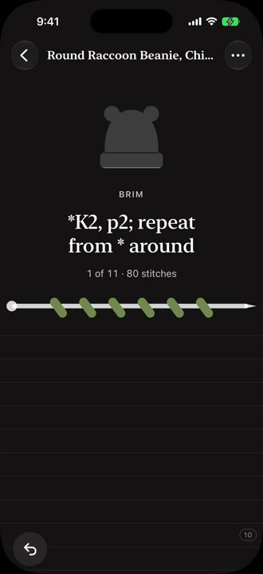
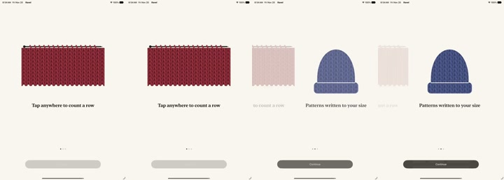

Fix two things before release. Ravel offered a trial for a hat it could not generate at the selected gauge. It also discarded a yarn entry after Done.
The reason to ship is already here. A gift knitter can pick a child’s hat, enter their own swatch, see the cast-on count before paying, and come back to the right round. A knitter bringing a PDF can mark a line and count rows independently, for free.

Child-size Raccoon Beanie in the recorded session.
Release priorities
Before release · Paid patterns
Check the chart before offering the trial
On Fir Tree Hat, I set Head to 13 in and gauge to 24 stitches and 20 rows over 4 in. The tree disappeared from the illustration, the materials still called for green and brown yarn, and the main button offered seven free days. I accepted a simulated subscription. The sheet closed on exactly the same settings with a disabled button. A customer who came for this hat would discover the problem after agreeing to renewal.
Before the simulated purchaseAfter the simulated purchase
Change. Check chart fit at the selected measurements for every customer. Explain which constraint failed beside the input. Offer a way back to a supported preset and show how that changes the project. A knitter must be able to use their measured gauge honestly.
Release check. At these exact values, a free user sees the fit problem before any purchase action. A subscriber sees the same explanation. A supported size and gauge restore the tree and the appropriate cast-on or purchase action. Watch the offer and the result · Design screen · Existing chart-fit test.
Before release · Stash
Done can discard the yarn on the label
I opened Add Yarn in an empty stash, left Name blank, entered “Merino wool” under Fiber, and increased the quantity to two skeins. Done closed the editor and brought back the empty stash. Name looks optional and Done stays enabled. Someone entering the details from an unlabeled ball has no reason to expect deletion.
Change. Keep a meaningful draft with a fallback name based on fiber or weight. If a name is required, keep the editor open, focus Name and preserve every other field. Reserve silent dismissal for an untouched draft.
Release check. Repeat the recorded steps, close and relaunch. Both the fiber and quantity must survive a successful Done. Also verify a completely untouched draft can be abandoned. Watch the two-skein entry · Stash dismissal logic.
High priority · Reading the pattern
Give stitch counts enough room at the largest text size
On the German Ribbed Beanie screen, the accessibility tree contained “5 von 21 · 88 Maschen.” The visible line ended at “88…”. The one-word English instruction, “Knit,” stayed much smaller than the section name. A low-vision knitter can enlarge the heading yet lose the meaning of the number that verifies the work.
Change and check. Let the instruction and stitch total wrap or scroll together, shrinking the fabric first. Repeat the test with a long shaping instruction and a three-digit stitch count at maximum type. The entire instruction and post-row count should be readable by sight without reducing system text size. Open the iPhone screenshot.
Through a knitter’s session
Coming for one holiday gift
The opening swatch responds to touch. Two taps on Continue bring up the trial before the visitor has picked a pattern. In the mock US offer, the clear billing line says $6.99 a month. The secondary “Get Started” exits for free and lands on Patterns. Both actions sound like ways to start the trial. Use Continue free. Keep the free tracker promise and amount beside the decision.
The Raccoon Beanie and Fir Tree Hat appeared on first launch. Raccoon appears again immediately under Free, which is helpful confirmation. Its Trending label says “Viral,” while the adjacent paid Fir Tree says “Holiday.” Use the existing subtitle to distinguish “Free” and “Library” across shelves and search results, particularly when a campaign sends people to one specific design. Trial and landing, 0:07
“Will this fit with my yarn?”
On Fir Tree Hat, Child changes Head from 22 to 20 in. DK sets the swatch to 22 stitches and 28 rows. After a half-stitch adjustment, the preview calls for 104 stitches in red. That is a persuasive product demonstration. It takes a scroll past per-color yardages, needles and tools to see it. Put the computed cast-on count beside the size or gauge, with the full materials list below.
Once I changed 22 to 22.5, the DK chip lost its selected state. The size or weight selection currently doubles as an exact preset match. Preserve the chosen yarn context and identify the measured gauge. Connect the stash at this stage so a knitter deciding between two yarns can check whether they have enough. Today a saved project can be linked to stash yarn in Details. Fine gauge and preview, 0:09
Deciding whether to pay
The product page kept my settings after I closed the offer. All three plan choices updated the terms and button correctly. The library paywall selected $39.99 yearly after the earlier $6.99 monthly onboarding offer. The $79.99 lifetime card initially faded under the pinned footer. One scroll revealed it. The presentation is generic at the moment the user has just chosen a very specific hat.
Carry the design and size into the heading, such as “Knit your child-size Fir Tree Hat.” Preserve a previously shown or chosen plan when practical. Keep the billed amount prominent and give all three plan names and prices a readable first view at standard text size. Check the layout again using StoreKit and a long localized price. Plan changes and dismissal · StoreKit Testing comparison.
Casting on with both hands busy
The free Child Raccoon Beanie opens with the exact needle sizes and 80 gray stitches. With no visible advance button, it took the earlier counter demonstration to infer that tapping the work acknowledges the cast-on. Someone studying a line can also advance while touching it. Use a one-time action such as Cast-on complete, then retain the large tap area and reachable undo. Keep the selected recipient visible where space permits. “Child” is cut off in the phone title.
In the dark-mode footage the initial loops are green, then the first knitted row is gray. For a colorwork gift project, artwork is an instruction too. Draw the cast-on loops in the specified yarn or use a neutral needle. First instruction and first tap, 0:07
Putting the project down
I advanced the brim to 3 of 11, undid once, then reopened the pattern. It returned to 2 of 11 with 80 stitches. After terminating the app, Projects showed a bare 1. Opening the project restored 2 of 11. Both values are correct. The first counts finished rows, the second describes the upcoming round. Put “Brim, round 2 next” on the project list, or label the existing count “1 round done.” A knitter should not have to tap twice to settle which number they wrote on paper.
Returning to the identical size and gauge shows Open Project, which safely avoids accidental copies. Two simultaneous identical hats for siblings have the opposite need. Keep Open Project as the primary action and provide “Start another” with a recipient or project name. The match currently uses design, measurements and gauge. List and resumed instruction · Open Project after backing out.
Recovering during crown shaping
Go to Section jumps straight to Crown. The Ribbed Beanie shows 80 stitches after the decrease and then “Knit” with 80 stitches on the plain round. In this run the header still said Crown, with no ordinal on either screen. The menu offered Go to Section but no Go to Round. The implementation provides row jumping only within a multi-row step. A knitter who knows “I finished crown round 6” must step through individually.
Give every worked round a number within its named section, even if the text changes every round. Make Go to Round use that number across the entire section. Preserve the post-decrease stitch count as a second check. At the end, one tap on the finishing instruction marked the hat Finished and undo reopened that same instruction. Keep this recovery behavior. Crown shaping and menu · Finish and undo.
Bringing a printed pattern or PDF
The empty Projects screen offers Start Row Counter and Browse Patterns. To open a PDF I had to find + → My Own Pattern. A person arriving from Files has already picked their pattern. Give Import Pattern a place on the empty screen, and consider a Files share-sheet entry. Multi-photo import currently lives inside an existing counter project.
Using the real system picker, I opened a three-page local PDF, marked a line, counted two rows, terminated Ravel and reopened from Projects. The band and count returned. At roughly 1.7 to 2.6 seconds in the import clip, the picker has dismissed and the empty Projects screen is back, with no acknowledgment of the selected file. The reader then opens. Keep the selected filename or an opening indicator visible during this handoff, particularly for larger photo patterns. In a separate seeded project I moved the band, increased the main count twice, undid once, and increased Decreases. The result was row 45 and eight decreases. The highlight never advanced with the counter. This independence fits repeats in a written pattern. A brief first-use cue on the strip would make the two tap targets discoverable. File import and cold return · Reader, undo and second counter.
Starting halfway through a sleeve
I created Sleeve A, tapped up to two rows, undid one, and used Set Row to jump to 32. The number was easy to read across the iPad. The dialog asked for “Row in This Section,” although a plain counter has no sections. Use “Rows completed” here. Reserve section-relative numbering for a guided pattern and make its convention explicit.
Stash already records brand, color, fiber, dye lot, length per skein and total quantity. The next useful step is a shopping decision. For a single-color pattern, compare the needed yardage with the linked stash total. For colorwork, compare each color separately. Set Row on a plain project.
Motion, readability and trust
A row feels like a row
At the first plain-counter tap the digit and fabric changed together. At two rows the cloth had two visible courses. Undo retracted one and left the button in place. In the guide, acknowledging cast-on moved to the first working instruction while the needle stayed bare of completed fabric. That distinction matters. Keep the numeral immediately legible during the animation and keep undo where the thumb last found it. Add, add, undo · Cast-on versus first completed round.
The reading line stays still
In the PDF, taps on the fabric updated its count without moving the page or the band. Moving the band did not change either counter. In landscape the existing build-28 capture puts the counter beside the page, leaving both readable on a stand. Preserve that separation when adding any future annotation controls. Watch the band during counting · Landscape iPad capture.
Onboarding still slides with Reduce Motion enabled
I enabled Reduce Motion on the iPad before launching. At about 1.5 seconds, the red swatch and its title moved off to the left as the blue hat entered. The trial page repeated the horizontal transition near 2.7 seconds. The primary button stayed anchored. Keep the stable button and use a cut or short opacity change for page content when Reduce Motion is active. Verify both transitions and inspect intermediate frames. Play the reduced-motion capture.

Four frames sampled roughly 83 ms apart from the iPad recording.
Language and size. The German UI returns to an English “Knit.” The German store description discloses English instructions, but the trial can appear before a visitor sees any instruction. Put a short language disclosure beside the first paid preview or trial for affected locales. German listing.
Purchase sheet. The same-build StoreKit Testing image also shows the Lifetime price fading into the footer. The trial terms, renewal amount and purchase button are visible. The phone movie shows the lower choice becoming readable on scroll. Reveal the third plan.
What a knitter can already get
A free counter can earn repeat visits. The credible reason to buy Ravel is that it turns the recipient’s measurements and the knitter’s actual swatch into usable instructions. Four alternatives set different expectations for that promise.
Tin Can Knits
The closest alternative for a gift knitter already provides size-specific instructions, linked technique tutorials and dozens of free patterns. Its Strange Brew sweater recipe is listed at US $12 for the individual PDF and has photos of knits made from the recipe. A person making one gift has a credible single-purchase alternative.
Implication. Demonstrate Ravel’s custom gauge with the opening numbers and a real finished sample. A larger library count alone gives a weak reason to start an annual subscription. App features · Catalog update · Strange Brew recipe and price.
knitCompanion
Its free tools track a row and a position within it, link a Ravelry library, and sync through iCloud. Paid tools include annotations, chart keys, reminders and hands-free control. It serves a knitter who already owns complex charts.
Implication. Ravel’s fast PDF markup and count are sufficient for a straightforward project. For a knitter working between a phone and an iPad, test demand for a user-controlled transfer of the PDF, marker, counters and notes. A single-device record should be easy to take along. US App Store feature breakdown.
My Row Counter
The maker lists multiple counters, row-specific reminders, webpage and PDF import, persistent highlights, and watch controls. These address the moment when two hands are busy and the knitter must remember which decrease happens next.
Implication. Ravel’s oversized tap surface and independently named second counter already serve that moment. Try one row-specific reminder or a hands-free prototype with actual needles before building a general chart editor. My Row Counter features.
Knit&Note
Its product page emphasizes returning to the last position and keeping the pattern, yarn, needles and notes together. It also markets an included designer library and connects a yarn purchase to stash inventory.
Implication. Make existing stash data answer “Can I knit this with what I own?” A single-color yardage check and a clearly named active project would bring value on both the shopping and knitting days. Knit&Note product overview.
What knitters described. In one public discussion, people described marking a line, crossing out irrelevant sizes, and separately writing down the last finished row. Some prefer physical highlighter tape. These anecdotes explain why Ravel’s independent marker feels natural and why “1” versus “2 of 11” deserves a label. They do not estimate how often customers encounter either issue. Knitter discussion of keeping a place in PDFs.
What would make the release stronger
Make the first paid design believable. The repository’s sample-image workflow builds assets from generated imagery. The seasonal Fir Tree and Raccoon use drawings. Attractive previews help browsing, but a shopper needs to know how the real construction looks at their gauge. For one featured design, publish a photo of an actual sample with its size, blocked gauge, yarn used and finished measurement. Label illustrative previews accordingly. Expand that practice first to the garment with the largest fit or yarn commitment. Image preparation · Sample-image brief.
Help at the difficult stitch. Materials already contains an abbreviation glossary. At a shaping round, a beginner must know to look under Materials. Put contextual definitions on terms such as k2tog and ssk, with a way to read them without advancing the row. Start with the featured hat. Check whether a beginner can identify the stitch and return to exactly the same round.
Make a second project worth returning for. The trial lasts seven days and a cast-on plan remains accessible afterward. That is valuable for an occasional gift knitter. Recurring value needs another useful make. Try a saved design or a second recipient at a previously used gauge. Observe whether people return for another cast-on before changing the price or adding a fourth purchase choice.
Protect months of work. The recorded cold restarts support ordinary on-device persistence. Source inspection shows local storage, with save errors discarded in the counter path and no project export control. Make a failed save visible and recoverable. Explore a portable project archive for a new device. Verify restoration of the frozen plan, imported file, both counters, notes and PDF marker. Device loss and storage failure were outside the simulator exercise. Counter persistence.
Release decision. Once the purchase and stash failures pass their retests, ship the focused free tracker and sized library. Prioritize large-text readability and the cast-on handoff in the same release window. Test the value of a real sample and a second project before committing to device sync, watch support or a larger pattern catalog.
A small release test with real knitters
Recruit two gift knitters bringing yarn, two people partway through their own PDFs, and one knitter who uses large text. Give the first group a recipient measurement and their swatch. Let them choose freely between a free design and a trial, then ask what they expect to pay and when. For the second group, ask them to mark a line, record a decrease, put the project away, and resume the next day. Have the large-text participant read a shaping row at their normal working distance.
Record where someone asks for help, the first row they would actually knit, whether it matches the plan, and whether they can recover one accidental tap. For a featured pattern, compare a completed, blocked sample with the promised dimensions and yarn estimate. In a launch cohort, distinguish first cast-on, first worked row, next-day return, and second distinct design. Use consented observation or available aggregate data. A trial start alone says very little about whether someone can finish their gift.
Screen recordings
Thirteen silent clips from this review. Select a clip to play it or open the MP4 directly. The timestamps in the findings refer to these edited files.
Reviewed November 20, 2026. I used the gift-pattern shopper, returning PDF knitter and stash-first knitter as three plausible users. The iPhone 18 Pro ran iOS 27.0 in dark appearance with Increase Contrast on. The 11-inch iPad Air ran iPadOS 27.0 in light appearance. I checked the largest accessibility text size in German on iPhone and recorded onboarding with Reduce Motion on iPad. The visual review included intermediate frames of page, count, sheet and guide transitions. Simulator recordings support visual observations. Haptic feel, VoiceOver speech, physical working distance and device frame rate still need hands-on validation.
The phone used a fresh persistent store and downloaded the seasonal catalog. The iPad import, blank-stash and plain-counter routes used on-disk projects. The iPad reader, crown and finishing routes used demo projects. The incompatible-gauge reproduction loaded the repository’s Fir Tree record directly and used a mock entitlement transition. Interactive prices were sample US offers. I cross-checked their layout against the archived StoreKit Testing screenshot. No real account was billed. Production purchases, cancellations, restores, and knitting a physical sample were outside this review.
Local debug app identified itself as 1.0.0 (28). The checkout began at 487db28. Concurrent purchase-dismissal edits appeared in the workspace during the review, so these findings apply to the recorded build and screens. The earlier gate at 13f5947 covered the same committed app source, and recorded 145 passing scheme tests, six skips and zero failures. Its separate journey runs passed 31 times across 138 checkpoints. It carried forward an earlier German result. The German screenshot here was captured during this audit. The earlier journeys exercised a valid paid design and a yarn with a name. Both can pass while the incompatible-chart and unnamed-yarn paths fail. Fresh unit-suite runs against the clean audited revision on GitHub and on the local iPhone simulator each passed 126 tests with zero failures and four skips. The four transaction tests skipped after StoreKit Testing failed to answer a purchase on the hosted simulator. November 20 test run. November 19 audit and gate result.
Competitor evidence comes from the makers’ published material and the linked public discussion, accessed November 20. Feature comparisons describe advertised capabilities. Adoption, willingness to pay, and commercial success require customer evidence.